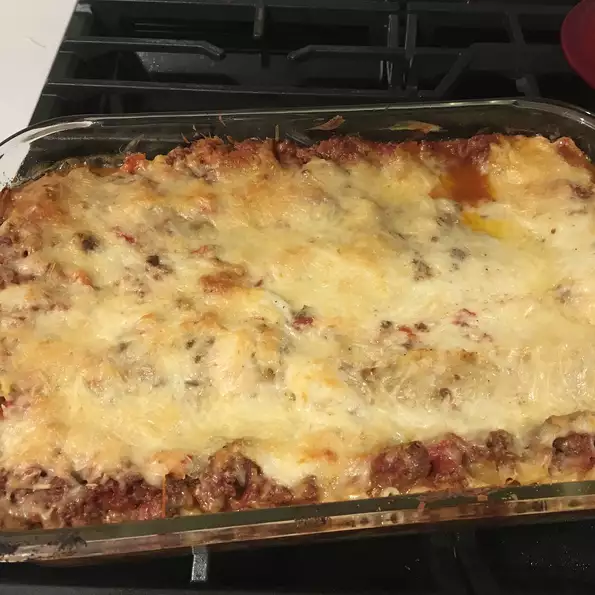

The origins of the word lasagne or lasagna can be
traced back to Ancient Greece. What we know as lasagne or
lasagna is derived from the word “laganon”, which was the first
form of pasta. Laganon was a reference to flat sheets of pasta dough
cut into thin strips.
Ingredient
Bolognese Sauce:
2 tablespoons extra-virgin olive oil
1 small onion, chopped
1 carrot, chopped
1 shallot, minced
3/4 ounces prosciutto, chopped
11 ounces ground pork
11 ounces ground beef
1 teaspoon ground nutmeg
1/2 teaspoon ground cinnamon
salt to taste
6 fluid ounces red wine
21 ounces peeled San Marzano tomatoes
White Sauce:
6 tablespoons butter
2/3 cup all-purpose flour
3 ¼ cups milk
½ teaspoon ground nutmeg
salt and ground black pepper to taste
Lasagna layers
11 ounces lasagna noodles
2 ½ cups grated Parmesan cheese, or to taste
Directions
Steps
Pour red wine over meat mixture; increase heat and cook until wine evaporates, about 3 minutes.
Add tomatoes and mix well; bring to a boil, cover, reduce heat, and simmer, stirring occasionally,
until tomatoes break down and flavors of Bolognese sauce have combined,
1 1/2 to 2 hours.
Pour red wine over meat mixture; increase heat and cook until wine evaporates,
about 3 minutes. Add tomatoes and mix well; bring to a boil,
cover, reduce heat, and simmer,stirring occasionally,
until tomatoes break down and flavors of Bolognese sauce have combined,
1 1/2 to 2 hours.
Melt butter in a saucepan over medium-low heat; add flour.
Whisk vigorously until mixture is smooth. Pour in milk and cook,
stirring occasionally, over medium heat until white sauce thickens enough to cover the back of a spoon,
about 10 minutes;
season with 1/2 teaspoon nutmeg, salt, and pepper.
Bring a large pot of lightly salted water to a boil.
Cook lasagna noodles in the boiling water,
stirring occasionally until tender yet firm to the bite,
about 8 minutes. Drain and run under cold water to stop the cooking process.
Lay noodles on a clean towel and pat dry
Preheat oven to 350 degrees F (175 degrees C).
Pour a ladleful of Bolognese sauce and a ladleful of white sauce over the
bottom of a 9x13-inch baking dish; top with 3 or 4 lasagna noodles.
Cover noodles with 1/3 of the white sauce and 1/3 of the Bolognese sauce.
Sprinkle some of the Parmesan cheese on top; cover with lasagna noodles.
Repeat layers, ending with white sauce and Parmesan cheese.
Bake in the preheated oven until bubbling and top is golden brown,
30 to 40 minutes. Let stand 3 to 4 minutes before slicing.